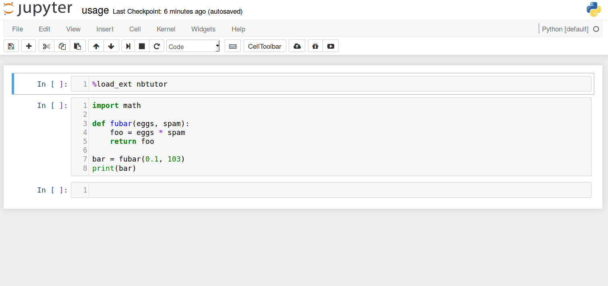
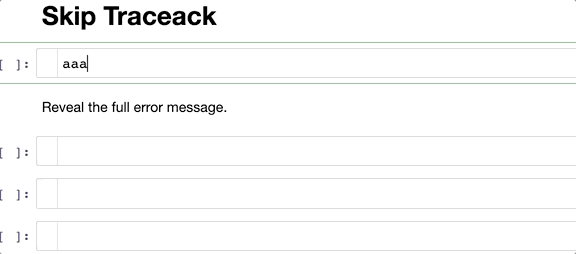
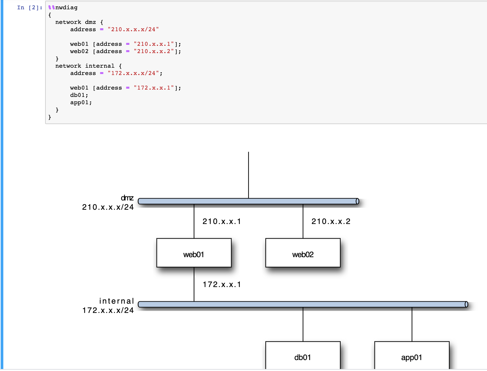
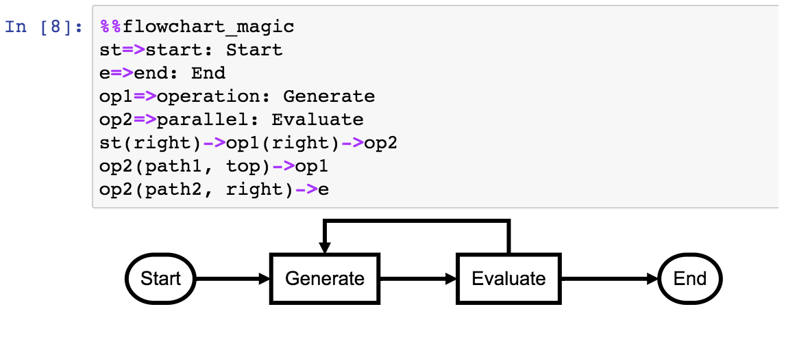
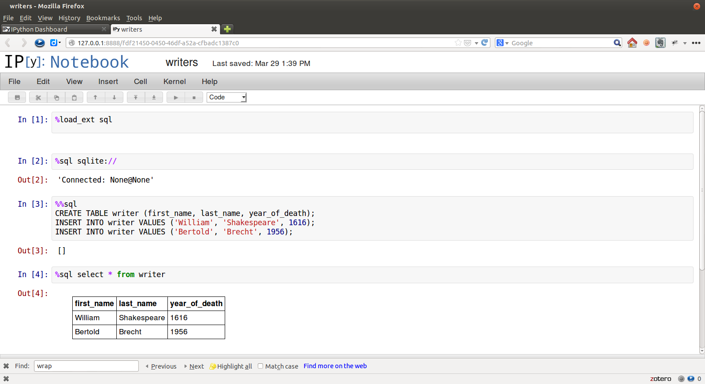
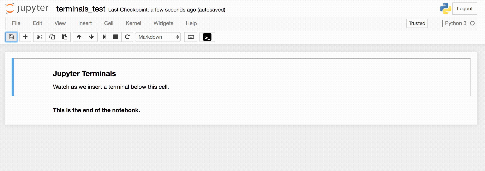
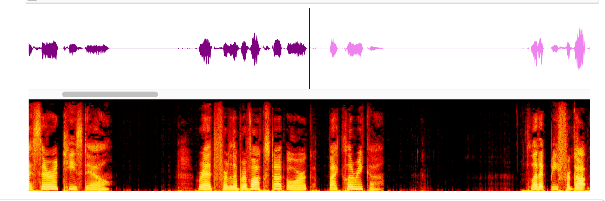
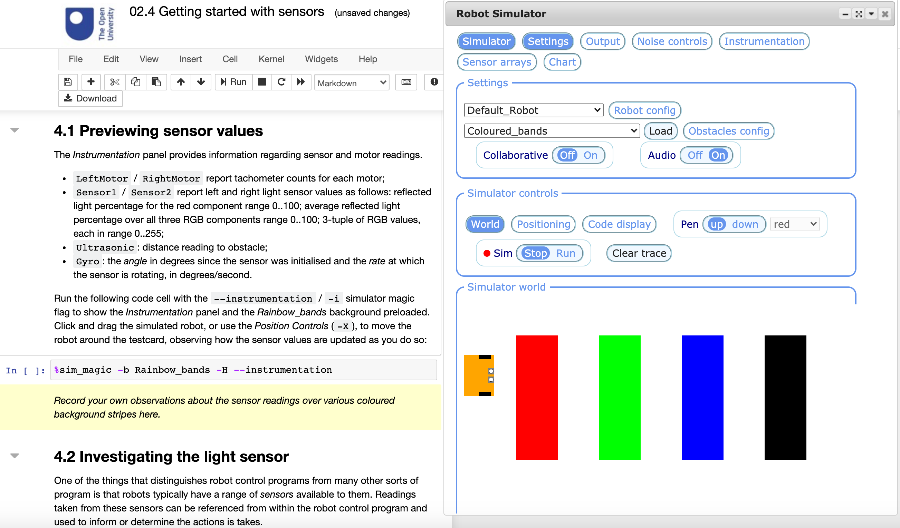

12 Custom Activity Extensions and Magics
In certain cases, extensions or magics might be created to support or enable particular activities within the notebook environment.
See also: Appendix — exploiting rich __repr__ outputs.
For example, an extension created to support live diagramming of the table structure of a connected relational database.
12.1 Notebook Cell manipulation
A range of extensions exist for customising the behaviour of notebook cells.
12.1.1 Cell Diff
The cell_diff extension is based on the Google diff-match-patch package and provides a range of simple tools for ad hoc, in notebook, code cell differencing.

12.1.2 Cell Popout
The nb_cell_dialog extension allows cells and code cell outputs to be popped out into a separate floating widget. Closing the widget sends the cell back to its original location in the notebook:

12.1.3 Cell Shell
The cell_shell magic allows a user to force the notebook to run each code cell in a notebook in a separate Python shell. This means that there are no hidden state effects, but requires that each code cell contains a complete program in order to run.
12.1.4 nbtutor Code Stepper
The nbtutor extension provides a simple code stepper and variable inspector at the code cell level.

The nbtutor extension supports activities framed around stepping through code a line at a time within a single code cell.
12.1.5 skip-traceback
The skip-traceback extension, which forms part of the official unoffical jupyter-contrib-nbextensions distribution, will collapse a full Python error message beneath a collapsed header:

Note that the pink error highlight in the cell gutter is provided by the cell_status extension.
The configurator panel for the extension allows the skip-traceback function to be automatically be enabled or disabled for each notebook that is opened, as well as an optional toolbar button for enabling / disabling the behaviour:

12.2 Diagramming
Server extensions/magics support in the creation of diagrams from simple text descriptions in a code cell.
12.2.1 Blockdiag Magic
The ipython_magic_blockdiag extension installs various magics for creating diagrams using the blockdiag(family of diagram scripting Python packages.




12.2.2 flowchart_magic
The flowchart_magichttps://github.com/innovationOUtside/flowchart_js_jp_proxy_widget) provides a simple jp_proxy_widget wrapper around the flowchart.js package to allow for the scripting of simple flowcharts:

The magic will also render a flowhchart from the code contained in a magicked cell using the cdfmlr/pyflowchart Python package:
Flowcharts can also be rendered from function definitions:
12.2.3 ipython_magic_folium Magic
ipython_magic_folium is a custom magic that simplifies the process of rendering interactive maps.
For example, we can create a simple map centred on a particular location and zoomed into a particular location, or automatically zoom and center a map based on the location of one or markers passed into it:

We can load in an render a geojson shapefile:

Or we can display a choropleth map coloured by data contained in a pandas dataframe:

12.3 Databases
A range of extensions/magics support interactions with databases.
12.3.1 Cypher Magic
The cypher_magic](https://github.com/innovationOUtside/cypher_magic) provides a simple magic for running Cypher database query commands against a connected graph database such as neo4j.

May 2021: this magic is not currently working in Binder demos at least.
12.3.2 Database Schema Display
The ipython_magic_sqlalchemy_schemadisplay magic will create and display a simple visual entity relation diagram depicting the structure of a connected database.

This extension is being used in a module on database management and analysis to visualise the structure of provided databases as part of worked activities, as well as allowing students to visualise the structure of databases they have constructed for themselves.
12.3.3 ipython-sql Magic
The ipython-sql magic provides support for connecting to and querying relational SQL databases by running native SQL code in a magicked code cell.

Results can be previewed as cell outputs or returned as pandas dataframes.
12.4 Utilities
Several extensions provide what we might term as general utility functions when working with notebooks.
12.4.1 Highlighter
The highlighter extension, which forms part of the official unoffical jupyter-contrib-nbextensions distribution, provides a range of toolbar buttons that can be used to style selected text in a markdown cell. This can be useful for note taking.
12.4.2 Jupyter Inline Terminals
Jupyter code cells allow you to execute code against a connected kernel as well as run commands against the operating system shell / command line. Whilst the Jupyter notebook server provides a complete terminal via a separate window, at times it may be convenient to have a terminal evailable within a notebook itself. The jupyterterminals package provides just such a terminal.

12.5 Applications
A wide range of Javascript packages exist that implement simple standalone applications that can be integrated into notebooks, most straightforwardly by wrapping them as an ipywidget using the jp_proxy_widget package.
12.5.1 wavesurfer.js spectrogram
The wavesurfer.js](https://wavesurfer-js.org/example/spectrogram/index.html?scroll) package can render an interactive spectrogram that scrolls along as a linked audio file plays to show the audio waveform and the spectrogram, allowing the user to “see” the structure of the audio file in terms of volume amplitude and frequency as the audio plays out.

Additional plugins, such as the cursor plugin can enrich the interactivity further.
This is not currently packaged for single line installation; a recipe for creating the widget is described in Rapid ipywidgets Prototyping Using Third Party Javascript Packages in Jupyter Notebooks With jp_proxy_widget.
12.5.2 nbev3devsim
The nbev3devsim package, developed for the OU module TM129, wraps ev3devsim, a simple Javascript based 2D robot simulator, as an ipywidget.

The widget integration allows the code entered into magicked code cells to sent to the simulator and executed therein. A return path allows data logged in the simulator to be analysed using the “native” unmagicked Python code cells.

Additional magics act as “lab assistants” to configure the simulator widget for particular activities.
Further reading: Introducing RoboLab presentation